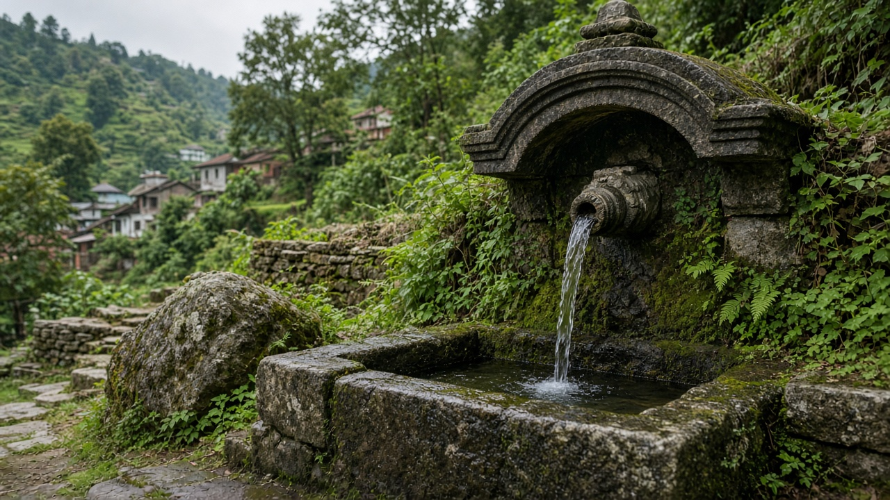
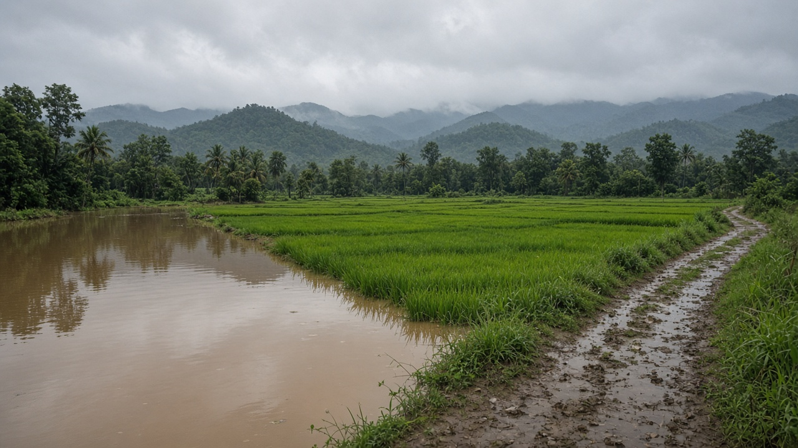

Waterborne Diseases and Pathogens
Published on August 20, 2026

Waterborne pathogens include bacteria, viruses, protozoa, and helminth eggs that reach people through drinking water, ice, washed produce, or accidental swallowing while bathing. Cholera, typhoid, bacillary dysentery, hepatitis A, rotavirus, and giardiasis remain leading causes of diarrhea and fever where sanitation is incomplete. A few organisms can cause outbreaks from a single well or tanker if fecal waste leaks into the source. Unlike chemical toxins, microbes can multiply after contamination, so a water system that looks clear can still deliver an infective dose. Children, elderly people, and those with weak immunity lose fluid fastest and face the highest risk of death from dehydration.
Transmission is a chain: feces, fingers, flies, fields, and fluids. Broken sewers, open defecation near springs, and flooding that mixes latrines with pipes all load pathogens into household water. Biofilms inside old tanks can shelter bacteria even after a brief chlorination. Laboratories use fecal indicator organisms as a warning, while culture, antigen tests, and molecular methods identify the actual pathogen during an outbreak. Clinical case definitions and stool samples must travel together, because treating only symptoms without naming the organism delays source control. Boiling, chlorination, filtration, and safe storage each cut a different class of microbe; none replaces sanitation at the origin of waste.
Outbreak response needs oral rehydration, targeted antibiotics when indicated, vaccination where licensed, and immediate repair of the broken barrier. Health posts should stock zinc and rehydration salts before the monsoon, not after the first cluster. Households can keep drinking water in covered, narrow-neck vessels and use a dedicated ladle. Schools that provide soap and separate toilets for girls reduce both diarrhea and drop-out. Waterborne disease is therefore a toxicology-adjacent problem of living agents: the dose is an infective number of organisms, the pathway is the water we trust, and the control is stopping feces from becoming a drink.

जलजन्य रोगजनकमा जीवाणु, भाइरस, प्रोटोजोआ र कृमि अण्डा पर्छन् जो पिउने पानी, बरफ, धोइएको तरकारी वा नुहाउँदा संयोगवश निल्दा मानिससम्म पुग्छन्। सरसफाइ अधूरो भएका ठाउँमा हैजा, टाइफाइड, पेचिस, हेपाटाइटिस ए, रोटाभाइरस र जिआर्डिया झाडापखाला र ज्वरोका प्रमुख कारण रहन्छन्। मलमूत्र चुहावट स्रोतमा छिरे एक इनार वा ट्याङ्करबाट पनि महामारी हुन सक्छ। रासायनिक विषभन्दा फरक, सूक्ष्मजीव दूषणपछि गुणन गर्न सक्छन्, त्यसैले सफा देखिने पानी प्रणालीले पनि संक्रामक मात्रा दिन सक्छ। बालबालिका, वृद्ध र कमजोर प्रतिरक्षा भएका व्यक्तिले तरल चाँडो गुमाउँछन् र निर्जलीकरणबाट मृत्युको उच्च जोखिम बोक्छन्।
प्रसारण शृङ्खला हो: मल, औंला, झिंगा, खेत र तरल। फुटेको ढल, मुहान नजिक खुला दिसा, र चर्पीसँग पाइप मिसाउने बाढीले घरेलु पानीमा रोगजनक बोक्छन्। पुरानो ट्याङ्कीभित्रको जैव झिल्लीले छोटो क्लोरिन उपचारपछि पनि जीवाणु लुकाउन सक्छ। प्रयोगशलाले मल सूचक जीवलाई चेतावनीका रूपमा प्रयोग गर्छन्, जबकि संवर्धन, प्रतिजन परीक्षण र आणविक विधिले महामारीमा वास्तविक रोगजनक चिन्छन्। चिकित्सकीय घटना परिभाषा र दिसा नमूना सँगै जानुपर्छ, किनकि जीव ननामी लक्षण मात्र उपचार गर्दा स्रोत नियन्त्रण ढिलो हुन्छ। उमाल्ने, क्लोरिन, छनाइ र सुरक्षित भण्डारणले फरक वर्गका सूक्ष्मजीव काट्छन्; कुनै पनि फोहोरको उत्पत्तिमा सरसफाइको विकल्प होइन।
महामारी प्रतिक्रियामा मौखिक पुनर्जलीकरण, संकेत हुँदा लक्षित प्रतिजैविक, अनुमति प्राप्त खोप, र फुटेको अवरोधको तत्काल मर्मत चाहिन्छ। स्वास्थ्य चौकीले मनसुनअघि जस्ता र पुनर्जलीकरण लवण राख्नुपर्छ, पहिलो समूहपछि होइन। घरले पिउने पानी ढक्कन र साँघुरो मुख भएको भाँडोमा राख्न र छुट्टै प्याला प्रयोग गर्न सक्छ। साबुन र केटीका लागि छुट्टै चर्पी दिने विद्यालयले झाडापखाला र छोड्ने दर दुवै घटाउँछन्। त्यसैले जलजन्य रोग जीवित कारकको विषविज्ञान-समीप समस्या हो: मात्रा संक्रामक जीव संख्या हो, मार्ग हामी विश्वास गर्ने पानी हो, र नियन्त्रण दिसा पिउने कुरा बन्न नदिनु हो।
जलजन्य रोगजनकों में जीवाणु, विषाणु, प्रोटोजोआ और कृमि अंडे शामिल हैं जो पीने के पानी, बर्फ, धोई सब्जी या नहाते समय संयोग से निगलने पर लोगों तक पहुँचते हैं। अधूरी स्वच्छता वाले स्थानों में हैजा, टाइफाइड, पेचिश, हेपेटाइटिस ए, रोटावायरस और गियार्डिया दस्त और बुखार के प्रमुख कारण रहते हैं। मल रिसाव स्रोत में घुसे तो एक कुएँ या टैंकर से भी प्रकोप हो सकता है। रासायनिक विष से भिन्न, सूक्ष्मजीव दूषण के बाद गुणन कर सकते हैं, इसलिए साफ दिखने वाला जल तंत्र भी संक्रामक मात्रा दे सकता है। बच्चे, वृद्ध और कमजोर प्रतिरक्षा वाले लोग तरल जल्दी खोते हैं और निर्जलीकरण से मृत्यु का उच्च जोखिम रखते हैं।
संचरण एक शृंखला है: मल, उंगली, मक्खी, खेत और तरल। फूटी नाली, स्रोत के पास खुली शौच, और शौचालय से पाइप मिलाने वाली बाढ़ घरेलू जल में रोगजनक लाती हैं। पुरानी टंकी की जैव झिल्ली संक्षिप्त क्लोरीन उपचार के बाद भी जीवाणु छिपा सकती है। प्रयोगशालाएँ मल सूचक जीवों को चेतावनी के रूप में उपयोग करती हैं, जबकि संवर्धन, प्रतिजन परीक्षण और आणविक विधि प्रकोप में वास्तविक रोगजनक पहचानती हैं। नैदानिक मामले की परिभाषा और मल नमूना साथ जाने चाहिए, क्योंकि जीव बिना नामे केवल लक्षण उपचार करने पर स्रोत नियंत्रण देर होता है। उबालना, क्लोरीन, छनाई और सुरक्षित भंडारण अलग वर्ग के सूक्ष्मजीव काटते हैं; कोई भी अपशिष्ट की उत्पत्ति पर स्वच्छता का विकल्प नहीं है।
प्रकोप प्रतिक्रिया में मौखिक पुनर्जलीकरण, संकेत होने पर लक्षित प्रतिजैविक, अनुमत टीका, और टूटे अवरोध की तत्काल मरम्मत चाहिए। स्वास्थ्य चौकी को मानसून से पहले जस्ता और पुनर्जलीकरण लवण रखने चाहिए, पहले समूह के बाद नहीं। घर पीने का पानी ढक्कन और संकरे मुँह वाले बर्तन में रख सकते हैं और अलग कलछी उपयोग कर सकते हैं। साबुन और लड़कियों के लिए अलग शौचालय देने वाले विद्यालय दस्त और छोड़ने की दर दोनों घटाते हैं। इसलिए जलजन्य रोग जीवित कारकों की विषविज्ञान-समीप समस्या है: मात्रा संक्रामक जीव संख्या है, मार्ग वह जल है जिस पर हम भरोसा करते हैं, और नियंत्रण मल को पेय बनने से रोकना है।